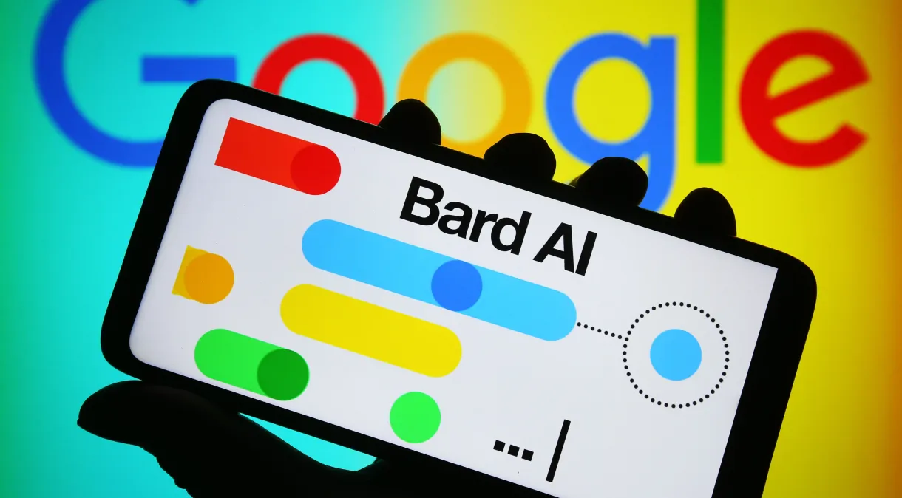

Novidades do Bard incluem capacidade de comunicação em vários idiomas, novos recursos de verificação e atualização do modelo de linguagem
A empresa anunciou nesta terça-feira (19) uma série de atualizações no Bard que darão à ferramenta de inteligência artificial acesso ao conjunto completo de ferramentas do Google —incluindo YouTube, Google Drive, Google Flights e outros — para ajudar os usuários em uma ampla variedade de tarefas.
Os usuários poderão, por exemplo, pedir ao Bard para planejar uma próxima viagem completa, com opções reais de voo. Ou um usuário pode pedir à ferramenta para resumir as anotações da reunião feitas em um documento recente do Google Drive.
As conexões com outros serviços do Google são apenas algumas das melhorias do Bard lançadas na terça-feira. Outras atualizações incluem a capacidade de comunicação com o chatbot em vários idiomas, novos recursos de verificação defatos e uma ampla atualização do grande modelo de linguagem no qual a ferramenta foi construída.
Os novos recursos marcam a maior atualização do Bard do Google nos seis meses desde que foi amplamente divulgado ao público.
A atualização ocorre no momento em que o Google e outros gigantes da tecnologia, incluindo a Microsoft e o fabricante do ChatGPT OpenAI, correm para lançar tecnologias de IA cada vez mais sofisticadas voltadas para o consumidor e para convencer os usuários de que tais ferramentas são mais do que apenas um artifício.
Na ocasião, foram apresentados dados sobre o impacto econômico gerado pelo uso das plataformas da empresa — como busca, Google Ads, AdSense, Play, Google Cloud e YouTube — por organizações no Brasil.
De acordo com dados da big tech, o impacto econômico total do Google no Brasil em 2022 foi estimado em R$ 153 bilhões entre as cinco regiões do país. Foram R$ 75,8 bilhões na região Sudeste, R$ 27,5 bilhões na região Sul, R$ 26,4 bilhões no Nordeste, R$ 14,4 bilhões no Centro-Oeste e R$ 9,2 bilhões na região Norte.
Ainda segundo a companhia, mais de 238 mil vagas de emprego foram abertas para atender o mercado, devido ao crescimento econômico das empresas do ecossistema.
O levantamento revelou ainda informações detalhadas sobre o impacto do Google Cloud no país.
No total, as soluções oferecidas pelo serviço da empresa geraram R$ 883 milhões na forma de ganhos de eficiência proporcionados diretamente pelo uso da nuvem.
Além disso, o Google Workspace — que reúne ferramentas colaborativas e de produtividade, como o Drive, Fotos, Docs e Planilhas — gerou R$ 31 bilhões em benefícios para os brasileiros, como otimização do tempo gasto para realizar tarefas.
Segundo a empresa, isso gerou uma economia de 264 horas por ano, o equivalente a 33 dias de trabalho.